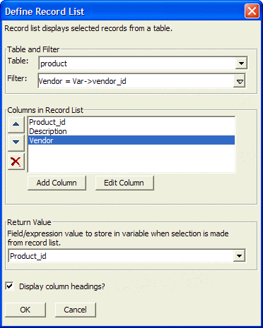

List Box Choices Dialog Box
In the Choices for List Box are field select either:
- "User Defined": Enter a list of choices in the text box below.
- "Computed Automatically": Enter parameters as required.
Optionally click the A/Z or Z/A buttons to sort your entries.
Optionally check the Advanced Formatting check box and click Defined Advanced Format to display the <span class=Screen>Advanced Formatting</span> dialog box.
Click OK to continue.
Choices Computed Automatically
Select a value from the Source list. There are many selections in the Source list. Most require you to make a second selection. If you accept the default value of "Values from a table/set", follow the next steps.
Select the name of a table or set from the Table or Set list.
Select a field from the Field list.
Optionally, select a subset of all records with an expression in the Filter field.
Optionally, select an ordering expression in the Order field.

Optionally check the Advanced Formatting check box and click Defined Advanced Format to display the <span class=Screen>Advanced Formatting</span> dialog box.
Click OK to continue.